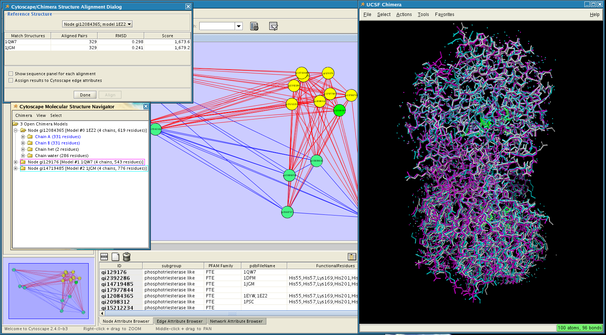

John "Scooter" Morris¹, Conrad Huang¹, and Thomas E. Ferrin¹
¹
Resource for Biocomputing, Visualization, and Informatics
University of California, San Francisco
Figure 1. structureViz in action. In this screenshot the PFAM family PTE (phosphotriesterase) has been opened in Cytoscape. Three of the available structures have been opened in UCSF Chimera and aligned using Chimera's structural alignment tools. The functional residues of one of the structures (pdb: 1EZ2) have also been selected (green highlights in Chimera). Click on the image to get a higher resolution version.
Abstract
UCSF structureViz is a Cytoscape plugin that links the visualization of biological networks (and biological relationships expressed as networks) provided by Cytoscape with the visualization and analysis of macromolecular structures and sequences provided by UCSF Chimera. structureViz provides commands to open structures in UCSF Chimera, align open structures using Chimera's Sequence/Structure tools, close structures that are currently open, and exit Chimera. In order to load a structure associated with a node, the Protein Databank (PDB) identifier (or identifiers if there are more than one) must be present as an attribute of that node. Currently, structureViz will look for an attribute named Structure, pdb, or pdbFileName. When a structure is opened, structureViz provides an alternative interface to Chimera: the Cytoscape Molecular Structure Navigator. This interface uses a tree-based paradigm to allow users to select and effect the display of models, chains, and residues, mostly through the use of context menus. Additional commands allow for selection by chemistry (Ligand, Ions, Solvent, Secondary Structure, and in the model context menu, Functional Residues). Users can also take advantage of Chimera's structural alignment capabilities by using the "Align" command.
Installation Instructions
- Download structureViz.jar
- Copy structureViz.jar to the plugins folder of your Cytoscape installation
- Restart Cytoscape
- structureViz commands are now available as node context menus or under the plugins menu
A structureViz tutorial is also available
Laboratory Overview | Research | Outreach & Training | Available Resources | Visitors Center | Search
{kind=link}